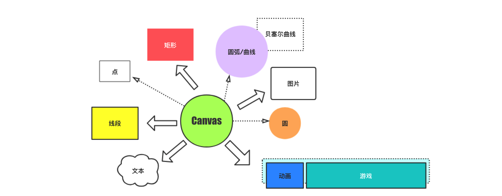
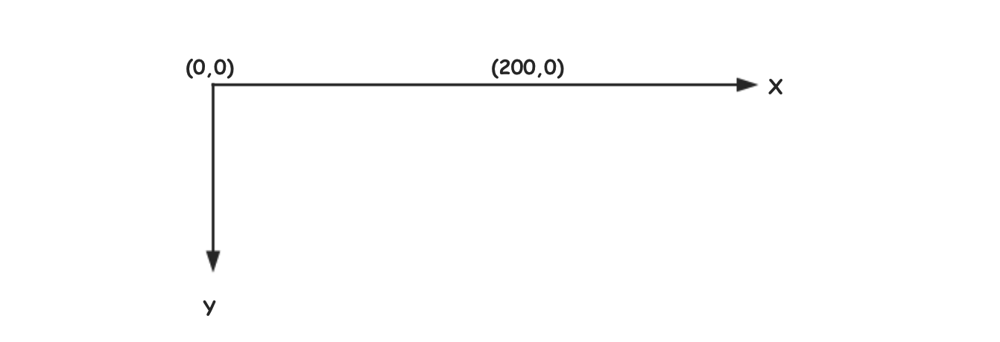
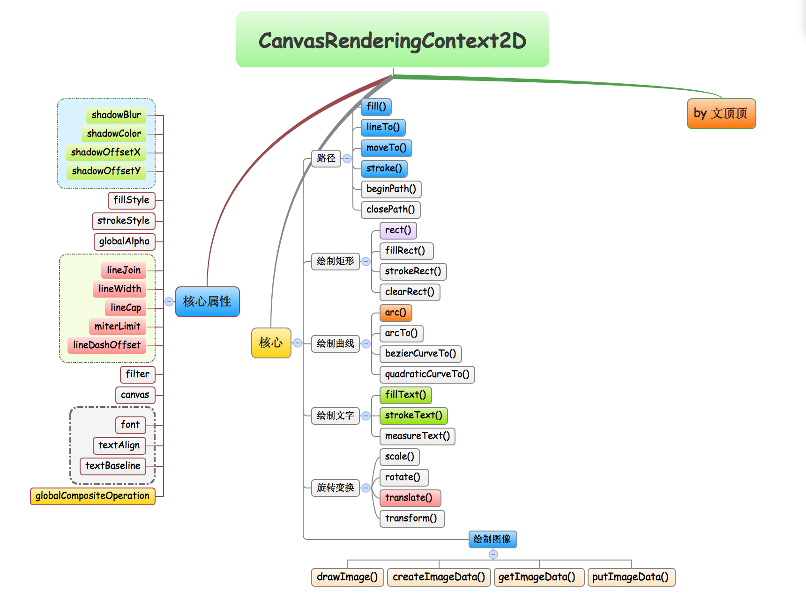
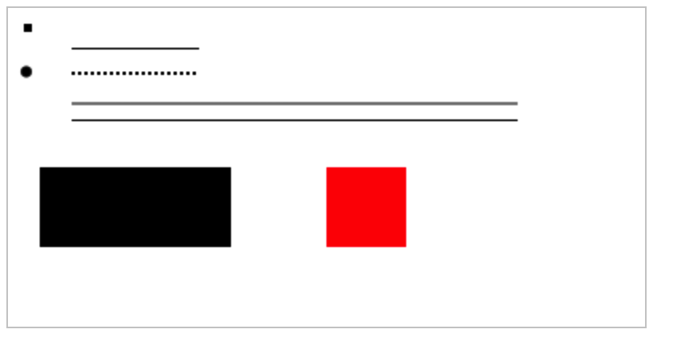

<!DOCTYPE html><html lang="zh-Hans"><head><meta charset="utf-8"><meta name="X-UA-Compatible" content="IE=edge"><title> javaScript系列 [10]-Canvas绘图(基础) · 花田半亩</title><meta name="description" content="javaScript系列 [10]-Canvas绘图(基础) - 文顶顶"><meta name="viewport" content="width=device-width, initial-scale=1"><link rel="icon" href="/logo.jpeg"><link rel="stylesheet" href="/css/apollo.css"><link rel="search" type="application/opensearchdescription+xml" href="https://weibo.com/u/3800117445/atom.xml" title="花田半亩"><meta name="generator" content="Hexo 5.4.0"><link rel="alternate" href="/atom.xml" title="花田半亩" type="application/atom+xml">
</head><body><div class="wrap"><header><a href="/" class="logo-link"></a><ul class="nav nav-list"><li class="nav-list-item"><a href="/" target="_self" class="nav-list-link">文顶顶</a></li><li class="nav-list-item"><a href="/tags/" target="_self" class="nav-list-link">标签</a></li><li class="nav-list-item"><a href="https://www.cnblogs.com/wendingding/" target="_blank" class="nav-list-link">博客园</a></li><li class="nav-list-item"><a href="https://github.com/flowerField" target="_blank" class="nav-list-link">GITHUB</a></li></ul></header><main class="container"><div class="post"><article class="post-block"><h1 class="post-title">javaScript系列 [10]-Canvas绘图(基础)</h1><div class="post-info">Apr 21, 2018<span class="post-count"></span> ✧ 字数统计:2.1k(字) &nbsp;&nbsp; ♨︎ 阅读时长:8(分钟)</div><div class="post-content"><div class='tip'>本文将对Canvas绘图技术进行简单介绍，主要包括Canvas标签、CanvasRenderingContext2D对象核心API的使用以及复杂图形的绘制等内容。</div>

<h3 id="Canvas简单介绍"><a href="#Canvas简单介绍" class="headerlink" title="Canvas简单介绍"></a>Canvas简单介绍</h3>

<div class='titleX'>**基本信息**</div>

<p><a href="">Canvas</a> 是HTML5提供的一种新标签。</p>
<figure class="highlight html"><table><tr><td class="gutter"><pre><span class="line">1</span><br></pre></td><td class="code"><pre><span class="line"><span class="tag">&lt;<span class="name">canvas</span> <span class="attr">id</span>=<span class="string">&quot;canvas&quot;</span> <span class="attr">width</span>=<span class="string">&quot;400&quot;</span> <span class="attr">height</span>=<span class="string">&quot;300&quot;</span>&gt;</span><span class="tag">&lt;/<span class="name">canvas</span>&gt;</span></span><br></pre></td></tr></table></figure>
<p><a href="">Canvas</a> 是一个**<code>矩形区域的画布</code>**，在画布上面我们可以通过<code>javaScript</code>控制每一个像素来绘制图形。</p>
<p><a href="">Canvas</a> 标签使用<code>javaScript</code>在网页上绘制图像，其本身不具备绘图功能。通过使用<code>canvas</code>并调用相关API，可用多种方式来绘制路径、矩形、圆形、字符以及图像等。</p>
<p class='tip'>**拓展** 最早[Canvas]()由`Apple`公司引入到WebKit内核，用于`Mac OSX`的Dashboard，后来又在**Safari**和**Google Chrome**中被实现。[Canvas]()标签是**`WhatWG Web applications 1.0 规范`**的内容，也包含于HTML5中。
</p>

<p class='titleX'>**应用的领域和趋势**</p>

<blockquote>
<p><span style='color:#000'><strong>① 炫酷的场景秀</strong></span>：用Canvas实现动态的广告效果能够非常融洽的跨平台运行。<br><span style='color:#000'><strong>② 数据的可视化</strong></span>：各种统计类的图表(趋势图、饼状图、折线图等)，已经有成熟的开源框架。<br><span style='color:#000'><strong>③ 游戏开发领域</strong></span>：Canvas是<code>HTML5</code>游戏开发首选，其在基于Web的图像方面比Flash更立体和精巧。</p>
</blockquote>
<blockquote>
<p><span style='color:#000'><strong>[1] Web图形编辑器</strong></span>：<code>Photoshop</code>图形编辑器将能够100%基于Web实现。<br><span style='color:#000'><strong>[2] 远程可视化控制</strong></span>：Canvas能更好的实现基于Web的数据传输以gous可视化控制界面。<br><span style='color:#000'><strong>[3] 各种类型模拟器</strong></span>：从视觉效果和核心功能等方面来说，模拟器可以完全由<code>JavaScript</code>来实现。</p>
</blockquote>
<p><strong>参考资料</strong>  <a target="_blank" rel="noopener" href="http://www.w3school.com.cn/tags/html_ref_canvas.asp">W3school</a> 、 <a target="_blank" rel="noopener" href="https://developer.mozilla.org/zh-CN/docs/Web/API/Canvas_API/Tutorial">MDN_Canvas_API</a><br><a target="_blank" rel="noopener" href="https://www.w3.org/TR/2015/REC-2dcontext-20151119/">HTML Canvas 2D Context</a></p>
<div class='titleX'>**绘图准备和初体验**</div>

<p><a href="">Canvas</a> 标签默认拥有<code>300 * 150</code>的宽高，可以通过设置边框来查看。<br><a href="">Canvas</a> 标签支持鼠标右键·(复制图片)·以及(图片另存为)的操作，同图片一致。</p>


<p><a href="">Canvas</a> 标签的参考坐标系如上图所示，其<code>Y轴</code>的方向区别于常见的数学坐标系。<br><a href="">Canvas</a> 标签的浏览器兼容很好(<code>IE9+</code>)，若浏览器不兼容建议设置标签内容友好提示。<br><a href="">Canvas</a> 标签本身并不能绘制图形只是画布，具体绘图工作主要有Canvas上下文对象完成。<br><a href="">Canvas</a> 标签上下文对象是<code>javaScript</code>操作Canvas的接口，常用类型是<code>CanvasRenderingContext2D</code>。<br><a href="">Canvas</a> 标签在设置画布宽度和高度的时候建议在标签中直接通过<code>width</code>和<code>height</code>属性节点来实现。</p>
<figure class="highlight html"><table><tr><td class="gutter"><pre><span class="line">1</span><br></pre></td><td class="code"><pre><span class="line"><span class="tag">&lt;<span class="name">canvas</span> <span class="attr">id</span>=<span class="string">&quot;canvas&quot;</span> <span class="attr">width</span>=<span class="string">&quot;400px&quot;</span> <span class="attr">height</span>=<span class="string">&quot;300px&quot;</span>&gt;</span>当前浏览器不支持canvas，请升级浏览器<span class="tag">&lt;/<span class="name">canvas</span>&gt;</span></span><br></pre></td></tr></table></figure>
<figure class="highlight javascript"><table><tr><td class="gutter"><pre><span class="line">1</span><br><span class="line">2</span><br><span class="line">3</span><br><span class="line">4</span><br><span class="line">5</span><br><span class="line">6</span><br><span class="line">7</span><br><span class="line">8</span><br><span class="line">9</span><br><span class="line">10</span><br><span class="line">11</span><br><span class="line">12</span><br><span class="line">13</span><br><span class="line">14</span><br><span class="line">15</span><br><span class="line">16</span><br><span class="line">17</span><br><span class="line">18</span><br></pre></td><td class="code"><pre><span class="line">&lt;script&gt;</span><br><span class="line">    <span class="comment">//01 获取canvas画布</span></span><br><span class="line">    <span class="keyword">var</span> canvas = <span class="built_in">document</span>.getElementById(<span class="string">&quot;canvas&quot;</span>);</span><br><span class="line">    <span class="comment">//02 获取canvas上下文对象</span></span><br><span class="line">    <span class="keyword">var</span> ctx = canvas.getContext(<span class="string">&quot;2d&quot;</span>);</span><br><span class="line">    <span class="comment">//03 设置路径</span></span><br><span class="line">    <span class="comment">//开启路径(可省略)</span></span><br><span class="line">    ctx.beginPath();</span><br><span class="line">    <span class="comment">//设置路径的起点</span></span><br><span class="line">    ctx.moveTo(<span class="number">20</span>,<span class="number">50</span>);</span><br><span class="line">    <span class="comment">//设置路径对应值</span></span><br><span class="line">    ctx.lineTo(<span class="number">100</span>,<span class="number">50</span>);</span><br><span class="line">    <span class="comment">//设置线条(描边)颜色</span></span><br><span class="line">    ctx.strokeStyle = <span class="string">&quot;red&quot;</span>;</span><br><span class="line">    <span class="comment">//04 绘制线条(描边)</span></span><br><span class="line">    ctx.stroke();</span><br><span class="line">&lt;/script&gt;</span><br><span class="line"></span><br></pre></td></tr></table></figure>
<p><strong>代码说明</strong> 上面的代码将会在canvas画布上绘制出一条<span style='color:red'>红色</span>的线条。</p>
<p class='tip'>**注意** 请不要使用`CSS`来控制[Canvas]() 标签的宽高，这样会导致内部图片拉伸和变形，如果重新设置[Canvas]() 标签的宽高属性将会擦除画布中已有的所有内容。</p>

<h3 id="Canvas的基本使用"><a href="#Canvas的基本使用" class="headerlink" title="Canvas的基本使用"></a>Canvas的基本使用</h3><div class='titleX'>**<span style='color:#000'>CanvasRenderingContext2D</span> 核心API介绍**</div>



<p>这里列出<code>CanvasRenderingContext2D</code>原型对象上面几乎所有的核心成员供参考。</p>
<figure class="highlight html"><table><tr><td class="gutter"><pre><span class="line">1</span><br><span class="line">2</span><br><span class="line">3</span><br><span class="line">4</span><br><span class="line">5</span><br><span class="line">6</span><br><span class="line">7</span><br><span class="line">8</span><br><span class="line">9</span><br><span class="line">10</span><br><span class="line">11</span><br><span class="line">12</span><br><span class="line">13</span><br><span class="line">14</span><br><span class="line">15</span><br><span class="line">16</span><br><span class="line">17</span><br><span class="line">18</span><br><span class="line">19</span><br><span class="line">20</span><br><span class="line">21</span><br><span class="line">22</span><br><span class="line">23</span><br><span class="line">24</span><br><span class="line">25</span><br><span class="line">26</span><br><span class="line">27</span><br><span class="line">28</span><br><span class="line">29</span><br><span class="line">30</span><br><span class="line">31</span><br><span class="line">32</span><br><span class="line">33</span><br><span class="line">34</span><br><span class="line">35</span><br><span class="line">36</span><br><span class="line">37</span><br><span class="line">38</span><br><span class="line">39</span><br><span class="line">40</span><br><span class="line">41</span><br><span class="line">42</span><br><span class="line">43</span><br><span class="line">44</span><br><span class="line">45</span><br><span class="line">46</span><br><span class="line">47</span><br><span class="line">48</span><br><span class="line">49</span><br><span class="line">50</span><br><span class="line">51</span><br><span class="line">52</span><br><span class="line">53</span><br><span class="line">54</span><br><span class="line">55</span><br><span class="line">56</span><br><span class="line">57</span><br><span class="line">58</span><br><span class="line">59</span><br><span class="line">60</span><br><span class="line">61</span><br><span class="line">62</span><br><span class="line">63</span><br><span class="line">64</span><br><span class="line">65</span><br></pre></td><td class="code"><pre><span class="line">canvas                      //当前的画布对象</span><br><span class="line">filter                      //设置模糊和灰度等过滤效果</span><br><span class="line">globalAlpha                 //设置透明度(0~1)</span><br><span class="line">shadowBlur                  //阴影的模糊级别</span><br><span class="line">shadowColor                 //阴影的颜色</span><br><span class="line">shadowOffsetX               //阴影距形状的水平距离</span><br><span class="line">shadowOffsetY               //阴影距形状的垂直距离</span><br><span class="line">fillStyle                   //设置矩形填充的样式(颜色)</span><br><span class="line">strokeStyle                 //设置描边样式</span><br><span class="line">lineCap                     //线条末端的类型   round butt(默认) square</span><br><span class="line">lineJoin                    //相交线的拐点类型 round miter(默认) bevel</span><br><span class="line">lineWidth                   //设置线条的宽度   </span><br><span class="line">miterLimit                  //最大斜接长度(两条线交汇处内角和外角之间的距离)</span><br><span class="line">lineDashOffset              //设置虚线偏移量</span><br><span class="line">font                        //设置字体的绘制参数(字号、字体、粗体等)</span><br><span class="line">textAlign                   //设置文字的水平对齐方式</span><br><span class="line">textBaseline                //设置文字基线(垂直对齐方式)</span><br><span class="line">globalCompositeOperation    //设置如何将一个源(新)图像绘制到目标(旧)图像上</span><br><span class="line">imageSmoothingEnabled       //设置图片是否平滑(非稳定)</span><br><span class="line">imageSmoothingQuality       //设置图像平滑度的属性(非稳定)</span><br><span class="line"></span><br><span class="line">moveTo()                    //设置路径(起点)</span><br><span class="line">lineTo()                    //设置路径</span><br><span class="line">beginPath()                 //开启路径</span><br><span class="line">closePath()                 //关闭路径</span><br><span class="line">setLineDash()               //设置虚线宽度数据</span><br><span class="line">getLineDash()               //获取虚线宽度集合</span><br><span class="line"></span><br><span class="line">rect()                      //绘制矩形</span><br><span class="line">fillRect()                  //矩形填充</span><br><span class="line">strokeRect()                //设置描边(矩形)</span><br><span class="line">clearRect()                 //擦除矩形区域内容</span><br><span class="line"></span><br><span class="line">stroke()                    //设置描边</span><br><span class="line">fill()                      //设置填充</span><br><span class="line">clip()                      //剪切指定形状和尺寸的区域</span><br><span class="line">arc()                       //绘制圆弧(圆)               </span><br><span class="line">arcTo()                     //绘制曲线</span><br><span class="line">ellipse()                   //添加椭圆路径(非稳定)</span><br><span class="line">bezierCurveTo()             //绘制贝塞尔曲线(3)</span><br><span class="line">quadraticCurveTo()          //绘制贝塞尔曲线(2)</span><br><span class="line">isPointInPath()             //检查某个点是否在指定的路径中</span><br><span class="line">isPointInStroke()           //检查某个点是否在指定(范围)</span><br><span class="line">createLinearGradient()      //创建线性渐变</span><br><span class="line">createRadialGradient()      //创建放射状/环形的渐变</span><br><span class="line"></span><br><span class="line">fillText()                  //矩形填充(绘制文字)</span><br><span class="line">strokeText()                //设置描边(文字绘制)</span><br><span class="line">measureText()               //获取并计算文本宽度</span><br><span class="line"></span><br><span class="line">drawImage()                 //绘制图片</span><br><span class="line">createImageData()           //创建新的ImageData对象</span><br><span class="line">getImageData()              //获取ImageData对象(矩形区域的像素数据)</span><br><span class="line">putImageData()              //从指定ImageData对象中把图像放到画布上面</span><br><span class="line">createPattern()             //在指定的方向上重复指定的元素</span><br><span class="line">drawFocusIfNeeded()         //如有必要则绘制焦点</span><br><span class="line"></span><br><span class="line">save()                      //保存状态</span><br><span class="line">scale()                     //设置缩放</span><br><span class="line">rotate()                    //设置旋转</span><br><span class="line">restore()                   //返回之前保存过的路径状态和属性</span><br><span class="line">translate()                 //平移(重新映射画布上的(0,0)位置)</span><br><span class="line">transform()                 //替换绘图的当前转换矩阵</span><br><span class="line">setTransform()              //将当前转换重置为单位矩阵,然后运行transform()</span><br><span class="line">resetTransform()            //使用单位矩阵重新设置当前变形(非稳定)</span><br></pre></td></tr></table></figure>
<p>画布的上下文<code>CanvasRenderingContext2D</code>对象为图形的绘制提供了丰富的接口，我们可以直接调用相关的API来绘制路径、圆弧和矩形等图案。此外，要得到目标图案其实有很多种方法<span style='color:#195'><strong>到达罗马的路途并非只有一条</strong></span>，而所有复杂的图案都离不开点、线和面，而且它们应该是<span style='color:red'><strong>渐进的</strong></span>。</p>
<div style='background:#eee;color:#34495e;width:120px;text-align:center'>**点-线-面**</div>

<p>这里先在页面中提供一个400 * 300的画布，获取画布的上下文对象。</p>
<figure class="highlight html"><table><tr><td class="gutter"><pre><span class="line">1</span><br></pre></td><td class="code"><pre><span class="line"><span class="tag">&lt;<span class="name">canvas</span> <span class="attr">id</span>=<span class="string">&quot;canvas&quot;</span> <span class="attr">width</span>=<span class="string">&quot;400px&quot;</span> <span class="attr">height</span>=<span class="string">&quot;200px&quot;</span>&gt;</span><span class="tag">&lt;/<span class="name">canvas</span>&gt;</span></span><br></pre></td></tr></table></figure>
<figure class="highlight javascript"><table><tr><td class="gutter"><pre><span class="line">1</span><br></pre></td><td class="code"><pre><span class="line"><span class="keyword">var</span> ctx = <span class="built_in">document</span>.getElementById(<span class="string">&quot;canvas&quot;</span>).getContext(<span class="string">&quot;2d&quot;</span>);</span><br></pre></td></tr></table></figure>
<p><strong>矩形点和圆形点的绘制</strong></p>
<figure class="highlight javascript"><table><tr><td class="gutter"><pre><span class="line">1</span><br></pre></td><td class="code"><pre><span class="line">ctx.fillRect(<span class="number">10</span>,<span class="number">10</span>,<span class="number">5</span>,<span class="number">5</span>);            <span class="comment">//矩形点</span></span><br></pre></td></tr></table></figure>
<figure class="highlight javascript"><table><tr><td class="gutter"><pre><span class="line">1</span><br><span class="line">2</span><br></pre></td><td class="code"><pre><span class="line">ctx.arc(<span class="number">11.5</span>,<span class="number">40</span>,<span class="number">3</span>,<span class="number">0</span>,<span class="number">2</span> * <span class="built_in">Math</span>.PI);   <span class="comment">//圆形点</span></span><br><span class="line">ctx.fill();                         <span class="comment">//设置填充</span></span><br></pre></td></tr></table></figure>
<p><strong>线条的绘制</strong></p>
<figure class="highlight javascript"><table><tr><td class="gutter"><pre><span class="line">1</span><br><span class="line">2</span><br><span class="line">3</span><br><span class="line">4</span><br><span class="line">5</span><br><span class="line">6</span><br><span class="line">7</span><br><span class="line">8</span><br><span class="line">9</span><br><span class="line">10</span><br><span class="line">11</span><br><span class="line">12</span><br><span class="line">13</span><br><span class="line">14</span><br><span class="line">15</span><br><span class="line">16</span><br><span class="line">17</span><br><span class="line">18</span><br><span class="line">19</span><br><span class="line">20</span><br><span class="line">21</span><br><span class="line">22</span><br><span class="line">23</span><br><span class="line">24</span><br><span class="line">25</span><br><span class="line">26</span><br></pre></td><td class="code"><pre><span class="line"><span class="comment">//方式(一) 通过绘制连续的矩形来绘制线条</span></span><br><span class="line"><span class="comment">//示例：(实线)</span></span><br><span class="line"><span class="keyword">for</span>(<span class="keyword">var</span> i = <span class="number">0</span> ; i &lt; <span class="number">80</span> ; i++)</span><br><span class="line">&#123;</span><br><span class="line">    ctx.fillRect(<span class="number">40</span> + (i * <span class="number">1</span>),<span class="number">25</span>,<span class="number">1</span>,<span class="number">1</span>);</span><br><span class="line">&#125;</span><br><span class="line"></span><br><span class="line"><span class="comment">//示例：(虚线)</span></span><br><span class="line"><span class="keyword">for</span>(<span class="keyword">var</span> i = <span class="number">0</span> ; i &lt; <span class="number">20</span> ; i++)</span><br><span class="line">&#123;</span><br><span class="line">    ctx.fillRect(<span class="number">40</span> + (i * <span class="number">4</span>),<span class="number">40</span>,<span class="number">2</span>,<span class="number">2</span>);</span><br><span class="line">&#125;</span><br><span class="line"></span><br><span class="line"><span class="comment">/*********************************************/</span></span><br><span class="line"></span><br><span class="line"><span class="comment">//方式(二) 通过路径的方式来绘制线条</span></span><br><span class="line"><span class="comment">//示例：(色度稀释的线条)</span></span><br><span class="line">ctx.moveTo(<span class="number">40</span>,<span class="number">60</span>);</span><br><span class="line">ctx.lineTo(<span class="number">320</span>,<span class="number">60</span>);</span><br><span class="line"></span><br><span class="line"><span class="comment">//示例：(色度正常的线条)</span></span><br><span class="line">ctx.moveTo(<span class="number">40</span>,<span class="number">70.5</span>);</span><br><span class="line">ctx.lineTo(<span class="number">320</span>,<span class="number">70.5</span>);</span><br><span class="line"></span><br><span class="line"><span class="comment">//设置描边</span></span><br><span class="line">ctx.stroke();</span><br></pre></td></tr></table></figure>
<p><strong>面(矩形)的绘制</strong></p>
<figure class="highlight javascript"><table><tr><td class="gutter"><pre><span class="line">1</span><br><span class="line">2</span><br><span class="line">3</span><br><span class="line">4</span><br><span class="line">5</span><br><span class="line">6</span><br><span class="line">7</span><br><span class="line">8</span><br><span class="line">9</span><br></pre></td><td class="code"><pre><span class="line"><span class="comment">//方式(一) 以“矩形点” + 循环的方式来绘制矩形</span></span><br><span class="line"><span class="keyword">for</span>(<span class="keyword">var</span> i = <span class="number">0</span> ; i &lt; <span class="number">40</span> ; i++)</span><br><span class="line">&#123;</span><br><span class="line">    ctx.fillRect(<span class="number">20</span> + (i * <span class="number">3</span>),<span class="number">100</span>,<span class="number">3</span>,<span class="number">50</span>);</span><br><span class="line">&#125;</span><br><span class="line"></span><br><span class="line"><span class="comment">//方式(二) 直接绘制矩形</span></span><br><span class="line">ctx.fillStyle = <span class="string">&quot;red&quot;</span>;</span><br><span class="line">ctx.fillRect(<span class="number">200</span>,<span class="number">100</span>,<span class="number">50</span>,<span class="number">50</span>);</span><br></pre></td></tr></table></figure>
<p>这里贴出上面代码运行的结果图。<br></p>
<p class='tip'>**备注** 在使用canvas上下文绘制线条的时候，我们会发现线条最终的颜色看上去并不是黑色的感觉比较淡，此外线条的宽度看上去也并不是`1px`而是`2px`。其实，主要原因是在canvas在进行绘制的时候，对齐的点是线的中心位置，因此就会把线分成上下两个0.5px，在进行显示的时候会补齐，因此其色度自然也是不饱和的。在绘制的时候，可以考虑给绘制坐标设置`0.5px`的偏移量来解决。</p>


<hr>
<ul>
<li>Posted by 博客园·<a target="_blank" rel="noopener" href="http://www.cnblogs.com/wendingding/">文顶顶</a> | <a target="_blank" rel="noopener" href="http://wendingding.com/">花田半亩</a></li>
<li>联系作者 简书·<a target="_blank" rel="noopener" href="http://www.jianshu.com/users/c5703017b9f5/latest_articleshttp://www.jianshu.com/users/c5703017b9f5/latest_articles">文顶顶</a> 新浪微博·<a href="http://weibo.com/p/1005053800117445/home?from=page_100505&mod=TAB#place">Coder_文顶顶</a></li>
<li>原创文章，版权声明：自由转载-非商用-非衍生-保持署名 | <a target="_blank" rel="noopener" href="http://www.cnblogs.com/wendingding/">文顶顶</a></li>
</ul>
</div></article></div></main><footer><div class="paginator"><a href="/2018/04/22/javaScript%E7%B3%BB%E5%88%97%20%5B11%5D-Canvas%E7%BB%98%E5%9B%BE(%E8%B7%AF%E5%BE%84)/" class="prev">上一篇</a><a href="/2018/04/20/javaScript%E7%B3%BB%E5%88%97%20%5B09%5D-javaScript%E5%92%8CJSON(%E6%89%A9%E5%B1%95)/" class="next">下一篇</a></div><div class="copyright"><p>© 2015 - 2022 <a href="https://weibo.com/u/3800117445">文顶顶</a> &nbsp;☁ 全站字数统计 422k (字)</p></div></footer></div><script async src="//cdn.bootcss.com/mathjax/2.7.0/MathJax.js?config=TeX-MML-AM_CHTML" integrity="sha384-crwIf/BuaWM9rM65iM+dWFldgQ1Un8jWZMuh3puxb8TOY9+linwLoI7ZHZT+aekW" crossorigin="anonymous"></script></body></html>